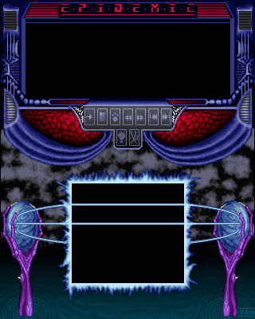
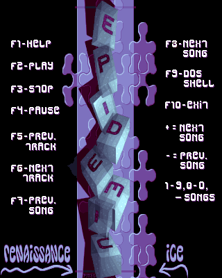
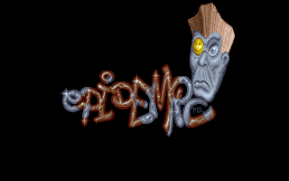
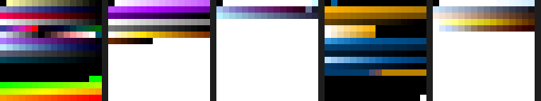
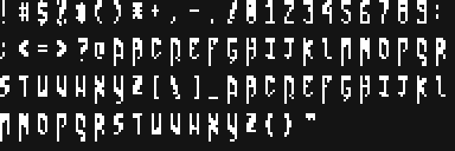
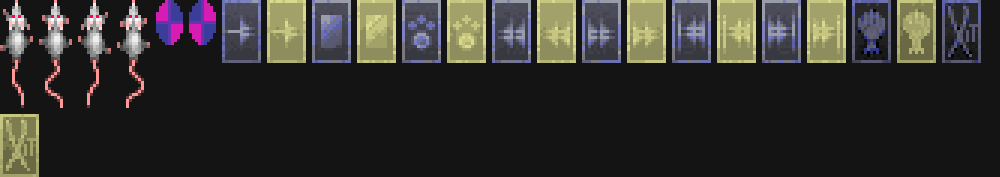

Epidemic is a music disk: 18 S3M tunes
(three archives EPIDEMIC.001/2/3, 1.5 + 2.1 + 2.1 MB, plain
concatenations of modules), an EPIDEMIC.EXE of 242,329
bytes, a setup program and an NFO. Code: StarScream and DareDevil,
concept Syntax Error, graphics Delsion, Ink, Pixel, Tran, Oman, ANSI
Pnakotic (credits in epidemic/EPIDEMIC.NFO). The NFO asks
for a 386/40, and the program supports GUS, Sound Blaster family,
AudioTrix and PAS cards (the config written by SETUP.EXE
sits in the last 10 bytes of the EXE).
There is no 3D and no demo timeline here: the "effects" are a
three-part intro, a player screen with VU bars and a particle field,
palette fades, and a mouse cursor. Everything is drawn into the tweaked
VGA mode X, and most of the interesting work is in how that mode is
abused (section 1). This write-up describes what the JavaScript port
(web/index.html) does, with the original code addresses
taken from the unpacked image (see REVERSE.md; addresses
are offsets in the unpacked 32-bit segment, "seg32"). The asm tricks are
in WRITEUP-asm.md.
| Part | Status |
|---|---|
| Screens (player, help, ICE & REN, logo, head), palettes, texts, song table, button hit boxes | extracted from the EXE
(tools/extract.py), not redrawn |
| Text glyphs and mouse sprites | produced by running the real compiled blitters under the emulator, then stored as pixel lists |
| Particle field | exact: the port's update rule reproduced 371
consecutive recorded updates with zero differences
(REVERSE.md section 6) |
| VU bar geometry (position, pitch, height rule, colours) | ported from the code (0x10969) |
| VU levels | rules reconstructed from the engine (0x3f09..0x4118); validated by a lock-step model: exact for the first 756 engine ticks of the intro tune, then one tick off (attributed to how the emulator injects the sound IRQ, not to a rule difference) |
| VU levels against the audio | approximate in time: the port derives levels from pattern data at the order/row libopenmpt reports |
| Intro (ICE & REN scroll, gold zoom, head bounce) | ported from the code (0xef83-0xf27d, 0xff00, 0xff8b); I did not find a frame-by-frame diff against emulator output in the repo |
| Audio | not original: libopenmpt (windowed sinc) instead of the original S3M engine and Gravis Ultrasound mixing |
| Fade lengths | 64 frames, as measured in the emulator (see 5) |
aspect-ratio:4/3 in the CSS): a 4:3 monitor shows 320x400
with pixels twice as tall as wide, so a real screenshot of the original
is a 4:3 picture. A rendering at square pixels would be half as tall as
it should.0x0c/0x0d (start address)
from [0x96ea] / [0x96ec], and the IRQ0 handler
sets the vsync flag [0x96d2] that the main loop and the
fade sequences wait on.WRITEUP-asm.md,
section 1). The port runs a 70 Hz frame loop with an accumulator
(FPS=70, at most 5 catch-up frames).yield is one frame (changeSong,
helpScreen, intro), and queues one pending key
while a sequence runs - the original ignores keys while it blocks, one
stays buffered.A 320x400 picture (128,000 bytes, LZ-packed in the overlay) is
converted to planar and copied into video page 1 (VRAM offset
0x7d00 = 400 rows x 80 bytes). Then the CRTC start address
is stepped by 0xa0 (two rows) per frame, 0 ->
0x7d00: exactly 200 steps. The picture therefore
scrolls up into view without any pixel being copied,
only two CRTC register writes per frame. While it scrolls the palette
fades in; the loop then holds 100 frames and fades out.
// web/index.html, intro(): one frame per CRTC step
for(let f=0;f<200;f++){ tFade=[META.pal.ice,'in',Math.min(64,f+1)]; icY=400-2*(f+1); yield }
for(let f=0;f<100;f++){ tFade=[META.pal.ice,'in',64]; yield }
for(let t=1;t<=64;t++){ tFade=[META.pal.ice,'out',t]; yield }Port: the picture is blitted at
y = 400 - 2*(f+1) into the 320x400 index buffer, which is
the same thing as moving the start address. Its palette is the one at
0xbcb5 (the first guess, 0xc2b5, was wrong;
the live DAC dump settled it).
This is the cleverest picture effect in the program and it uses no multiplication. The source is a 320x200 logo band (rows 111-160 contain the lettering). The CRTC is set up with:
0x13 (offset) = 0xa0: a virtual
width of 1280 pixels (320 bytes per row);9 (max scan line) |= 1: every
scan line is shown twice;0xf: a byte written to VRAM goes
to all four planes, i.e. it makes 4 identical
horizontal pixels.Each frame the code takes one column x
of the logo and writes its 50 pixels (rows 111-160) down plane-byte
column x + 0x50, four VRAM rows per source
pixel. With map mask 0xf every byte is 4 pixels
wide, the 4-row repeat plus the doubled scan lines make each source
pixel 4 px wide and 8 scan lines tall. Then the CRTC start address
advances by one byte (4 pixels) per frame for 400 frames, which scrolls
the band across the screen while it is still being drawn. After column
319 the loop writes zeros so that the trail is cleared.
// intro(), part 2: V is the plane-byte memory (all planes get the same byte)
for(let x=0;x<400;x++){
for(let r=0;r<50;r++) for(let k=0;k<4;k++)
V[(4*r+k)*320 + x+0x50] = x<320 ? LOGO[(111+r)*320 + x] : 0;
gStart=x+1; yield }
// drawGold(): what the VGA does with start address, doubled scan lines and 4-wide bytes
fb[y*W+x] = V[(gStart + (y>>1)*320 + (x>>2)) & 0xffff]The column routine (0xf27e) is a straight unrolled sequence: 50
copies of "load one source byte, store it to four rows at
edi, edi+0x140, +0x280,
+0x3c0, step the source by 320 and the destination by
0x500" (checked: 50 loads between 0xf28f and 0xf954), with a
cmp [0xef73],0x13f / ja in front that switches to a
zero-writing copy once the column index exceeds 319. Port: the
whole effect, including what the doubled scan lines do, is reproduced by
drawGold; I did not find a pixel diff against the emulator
in the repository for this phase.
A 320x200 chunky picture (the "graffiti head") is copied into VRAM rows 200-399, and the CRTC start row is animated: it starts at row 370 and bounces on row 170, so the picture seems to fall onto the screen and bounce, and again nothing is copied after the first frame. The state is one 16.16 position and one 16.16 velocity:
ffb4: sub dword [0xef77], 0x2000 ; vel -= 0.125 (gravity)
ffbe: mov eax,[0xef77] / add [0xef73],eax ; pos += vel
ffc9: cmp dword [0xef73], 0xaa0000 ; floor = row 170
ffd5: mov [0xef73], 0xaa0000
ffdf: neg dword [0xef77] / sar dword [0xef77],3 ; vel = -vel/8 ...
fff1: mov ebx,5 / imul ebx ; ... * 5 => restitution 5/8hVel -= 0x2000; hPos += hVel;
if (hPos <= 0xaa0000) { hPos = 0xaa0000; hVel = ((-hVel)>>3)*5 }The start address written to the CRTC is
(pos >> 16) * 0x50 (row times 80 bytes). The loop
runs 300 frames, then fades out. The initial values in the port
(hPos = 0x1720000 = row 370, hVel = -0x20000)
come from the emulator trace. The bounce rule is a verbatim port; the
integer >>3 then *5 order matters
because it truncates differently from *5/8.
All fades work on a software copy of the 768-byte DAC and are run by the per-frame routine, not by the scene code. In the port:
const fade=(base,t,out)=>{ for(let i=0;i<768;i++) dac[i] = out ? Math.max(0,base[i]-t) : Math.min(base[i],t) }sub [esi],bl / jae / mov [esi],0).add [esi],bl,
cmp [esi],[ebp], jbe, else store the target).
Both start from the same buffers, so a fade in from black and a fade out
of the same palette are mirror images.0xa0-0xaf, the comment colours 0xca-0xcd, and
neither range is part of the screen's own palette (their values are fade
targets at 0xa3a7 and 0xa40b, merged in at
draw time). So fading a title does not touch the picture.The screen is a pre-drawn 320x400 picture (four LZ-packed planes,
0x3274e..0x27f7c from the end of the file) with the dynamic
parts drawn over it each frame.
32 cells of 8x4 pixels at (32,24); cell
floor(song*31/17) is highlighted (colour 0x63,
others 0x6e). 18 songs are spread over 32 cells, so some
cells are never lit: the formula is song*31/17, not a
mapping to equal cells.
Text uses two small fonts whose glyphs are compiled
code (section 1 of the asm write-up). Advance is 5 px, a glyph
is 12 rows, \n moves down 16 rows. Title at (94,236),
author at (94,263), comment (up to 5 lines) at (80,37). The title font
uses palette entries 0xa0 + row (a vertical gradient inside
the glyph); the comment font uses 0xcb-0xcd. The port does
not run any of this code: the glyph pixel lists were captured once by
running the original blitter for every ASCII code, and
text() replays them. Characters with no glyph (some
box-drawing bars in comments) advance by 5 and draw nothing, like the
original.
Up to 16 bars (the original tests [0x9499] <= 16), 8
px wide, 12 px pitch, bar k at
x = 76 + 4*(16-n) + 12*k (centred for n
channels), growing upward from y = 122 on every other
row (the pitch is 0xa0 bytes = two rows). Height
in steps is (level*0xb4)>>8, colour
0xd3 + step, and the rest of the 45 steps is cleared to
0.
109a0: movzx eax, byte [esi+0x1615] ; level of channel esi
109a7: mov ah,0xb4 / mul ah / shr eax,8
109b2: mov al,0xd3 / mov ah,al ; colour, duplicated: stosw writes 2 bytes
109b9: stosw / sub edi,0xa2 / inc al / mov ah,al / loop 109b9const rows=(level[c]*0xb4)>>8;
for(let j=0;j<45;j++) for(let x=0;x<8;x++) dot(x0+x, 122-2*j, j<rows ? 0xd3+j : 0);The bar is a stack of 8-pixel segments; with the map mask at
0xf a single byte is 4 pixels, so stosw paints
8 pixels in one instruction. The colours 0xd3.. are a
gradient in the palette, so the bar changes colour with height.
Level rules (engine at 0x3f09..0x4118): the level is a byte per channel next to the running volume.
0x2a6c, equal to the S3M sample volume);DxF, DFx) is applied once at
the row start;D/K/L slides apply each engine tick after the
first;sub [..],1 / adc [..],0, 0x3ab2 and 0x1093b; see the asm
write-up).Engine ticks run at tempo*0.4 Hz (as in the port:
tickAcc += tempo*0.4/FPS). The port computes them from the
S3M pattern data (web/s3m.js reads orders, instrument
volumes and events) at the row libopenmpt reports. Its approximations:
the row is only known to the granularity of libopenmpt's progress
callback, and the 70 Hz frame loop and the audio clock drift
independently, so the bars follow the music but not tick-exactly. The
original read the levels from its own mixer's state.
The panel under the title is a field of 64
particles, each a record of 9 words at 0xb521:
colour, x, y, prevx, prevy, ax, ay, vx, vy, with 16-bit
unsigned positions and signed velocities and accelerations. Per frame,
for each axis: add the velocity to the position; if the add overflowed
the wrong way (see the asm write-up: the carry flag is the bounce test),
negate the velocity and clamp the position; then add the acceleration to
the velocity. So the particles are 64 bouncing balls in a 65536x65536
box with x/y acceleration, drawn as one pixel each in a
136x73 pixel window:
// stepStars(), y axis (x is the same with 0 as the other wall)
let vy=s16(s.vy), y=s.y+u16(vy), cy=y>0xffff; y=u16(y);
if (vy<0 ? !cy : cy) { s.vy=u16(-vy); y=0xffff }
s.y=y; s.vy=u16(s.vy+s.ay);
// screen position
dot(92 + ((s.x*0x88)>>>16), 282 + ((s.y*0x49)>>>16), s.c)The original erases each particle at its previous position (a second
routine at 0x123ab clears the stored prevx/prevy with a
single byte write) before drawing the new one. The port redraws the
whole picture every frame so it has no erase. The initial table
(colours, positions, velocities, accelerations) is read out of the EXE
(stars in meta.json), so the motion is
the original one, 371 frames verified.
Nine hit boxes (y0,y1,x0,x1, table at
0x96f5) map onto the keys F2-F10; a click is tested at
(x+5, y) of the cursor. The seven icons under the screen
and the lower-right icon are 18 button sprites (normal/pressed pairs)
stored as compiled blitters too, and extracted by running them. The
cursor is a rat with 4 distinct frames (every move event advances a
counter 0-7, two moves per frame), and a two-frame "gem" while a song
loads (flag [0xa3a1]). The port draws the cursor in the
index buffer (so it gets the original palette and the aspect ratio) and
hides the system cursor.
The sequence at 0x10530 is blocking and reproduced as a
generator: fade the title (64 frames), fade the comment (64), load the
next module (busy cursor), a 2-frame wait, fade the title in, fade the
comment in. Total about 256 frames (3.7 s at 70 Hz) plus the load,
during which input is ignored.
The original contains its own S3M player (pattern data converted to
up to four effect words per cell, a jump table at 0x358b)
driving a Gravis Ultrasound or software mixing for the other cards. The
port does not port it: libopenmpt (in an AudioWorklet
through chiptune3, 8-tap windowed sinc, stereo separation 100) plays the
18 modules, which were split out of the three archives at their
SCRM signatures. This makes the sound different from the
original (resampler, no GUS hardware model), but it gives the required
pause and seek for free: pause = worklet pause; seeking is by order
(F5/F6) through setOrderRow, rather than by absolute
time.
tools/unpack.py runs
the LZEXE-style stub in Unicorn (16-bit), applies the relocations and
stops at the first instruction below the stub's segment. What it finds
is a DOS32-style extender plus a flat 32-bit program, which is dumped at
file-image offset 0x2630.0xFF ends); the decoder is
unlz in tools/extract.py.tools/emu.py
emulates just enough of DOS32 services, mode X VGA (planes, map mask,
CRTC start/offset, DAC, retrace bit), the PIT and the keyboard to run
the program and the sound engine; glyphs and sprites are extracted by
calling the program's own blitters in it, the DAC is dumped to identify
palettes, and writes to the level bytes are logged to validate the VU
rules. The Gravis card is stubbed (port 0x246 reports
"timers fired").There is no 3D in this demo: no mesh, no texture. All art is 2D,
8-bit indexed, with 6-bit VGA palettes. "Colours" below is the number of
distinct index values used in the extracted bitmap
(web/assets/*.bin, counted), not the palette size (always
256 entries of 3 x 6 bit = 768 bytes).
| asset | where | format | size | colours used | palette (seg32 offset) |
|---|---|---|---|---|---|
player screen (main.bin) |
overlay, four streams 0x3274e 0x2ef23 0x2b6f6 0x27f7c
from end of file |
LZ, 4 x 32000 mode-X planes, de-interleaved to 320x400 chunky by
planar() |
128,000 | 121 | 0xb9b5 |
ICE & REN PRESENT (ice.bin) |
overlay 0xb618 |
LZ, 320x400 chunky | 128,000 | 92 | 0xbcb5 |
help screen (help.bin) |
overlay 0x4996 |
LZ, 320x400 chunky | 128,000 | 35 | 0xc8b5 |
logo band (logo.bin) |
overlay 0x77ac |
LZ, 320x200 chunky; gold lettering in rows 111-160 | 64,000 | 76 | 0xc2b5 |
graffiti head (head.bin) |
overlay 0x68d2 |
LZ, 320x200 chunky | 64,000 | 67 | 0xc5b5 |
| landscape, chrome scroller font, scroller code | overlay 0x1a8a9, 0x139fe,
0x145eb |
LZ, 64000 / 64000 / 28209 bytes | |||
| 2 text fonts | overlay 0x1f489 (0x23a0 bytes), 0x1ccf5
(0x244c bytes), raw |
compiled x86 blitters, 8-byte header (length, width 5, height 12, ascii) + code | 89 + 75 glyphs extracted (meta.json) |
title 0xa0+row, comment 0xcb-0xcd |
targets 0xa3a7, 0xa40b |
| mouse cursor and buttons | 24 raw chunks of about 1 KB from 0x1d0e9 |
compiled blitters; 6 cursor frames (rat 4, gem 2) + 18 button sprites (normal/pressed) | meta.json sprites (24 entries; the first
cursor frame is 11x36) |
||
| song table | seg32 0xa75f |
18 records of 4 pointers |
unlz in tools/extract.py (flag bits per 16-bit
word, 12-bit distance, length 3-18+, 0xFF ends); each stream's end is
the next stream's start. The palettes are taken straight from seg32 of
the unpacked image; the assignment of palette to picture was settled by
dumping the live DAC in the emulator.mov byte [edi], 0xa0+row
... ret). tools/emu.py ... glyphs / sprites
calls each blitter in the emulator and reads the pixels back from the
emulated VRAM; the port stores them as [x, y, colour, ...]
lists (-1 = untouched in sprites).HIYA! SYNTAX...) are in the file but not
reached in the normal flow; the port does not use them, and I did not
decode them further.web/assets/*.bin and the palettes in
meta.json, 6-bit values scaled to 8-bit; the 320x400
pictures are shown at their native pixel size, not 4:3 corrected):


Palettes, 256 entries each (16 x 16 swatches, left to right: main, ice, help, logo, head):

Title font, 89 glyphs (ASCII 33..126) read back from the compiled blitter, drawn as shape only in white (colour indices ignored), 3x:

Mouse cursor frames (cur0-3 rat, cur4-5 gem) and the 18 button
sprites (normal/pressed pairs), 3x, drawn with the main
palette (my choice; which palette the live DAC holds at that time was
not checked here):

The comment font (75 glyphs) is not previewed: my first render of it showed gaps between rows that I did not investigate.